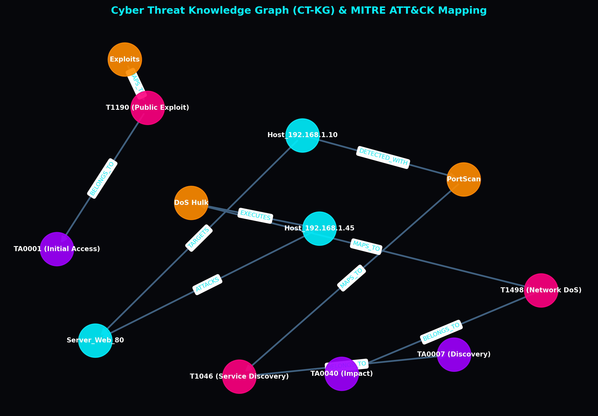

Trust Telemetry
0.78
Global Trust Index
96%
Consensus Agree
Accuracy / F1-Score
96.4%
False Alarm Rate (FPR)
3.8%
Host Inspector
Simulation Control
Speed Multiplier:
1x
2x
5x
Network Topology Map
Benign
Suspect
Isolated

Cyber Threat Knowledge Graph (CT-KG) & MITRE ATT&CK Mapping
Semantic Knowledge Graph mapping network hosts, destination ports, and dynamic flow patterns to MITRE ATT&CK Tactic & Technique IDs (e.g. T1498 Denial of Service, T1046 Network Service Scan, T1190 Public Exploit). Triplet embeddings are learned via TransE formulation.